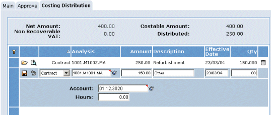

If you are costing or provisionally costing an invoice,

This allows you to identify how the costs of the invoice are allocated.
Enter a new costing line for each analysis (for example, to a
If you are provisionally costing the invoice, you will need to amend or confirm the costing later (see Costing Invoices By Batch).
The sum of all the analysis lines must equal the costable amount of the invoice (that is, net amount + non-recoverable